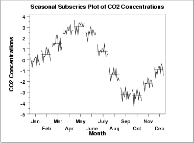

|
6.
Process or Product Monitoring and Control
6.4. Introduction to Time Series Analysis 6.4.4. Univariate Time Series Models 6.4.4.3. Seasonality
|
|||||
| Purpose |
Seasonal subseries plots
(Cleveland
1993) are a tool for detecting seasonality in a time series.
This plot is only useful if the period of the seasonality is already known. In many cases, this will in fact be known. For example, monthly data typically has a period of 12. If the period is not known, an autocorrelation plot or spectral plot can be used to determine it. |
||||
| Sample Plot |

This seasonal subseries plot containing monthly data of CO2 concentrations reveals a strong seasonality pattern. The CO2 concentrations peak in May, steadily decrease through September, and then begin rising again until the May peak. This plot allows you to detect both between group and within group patterns. If there is a large number of observations, then a box plot may be preferable. |
||||
| Definition |
Seasonal subseries plots are formed by
The user must specify the length of the seasonal pattern before generating this plot. In most cases, the analyst will know this from the context of the problem and data collection. Sometimes the series will need to be detrended before generating the plot, as was the case for the CO2 data. |
||||
| Questions |
The seasonal subseries plot can provide answers
to the following questions:
|
||||
| Importance | It is important to know when analyzing a time series if there is a significant seasonality effect. The seasonal subseries plot is an excellent tool for determining if there is a seasonal pattern. | ||||
| Related Techniques |
Box Plot
Run Sequence Plot Autocorrelation Plot |
||||
| Software | Seasonal subseries plots are available in a few general purpose statistical software programs. It may possible to write macros to generate this plot in most statistical software programs that do not provide it directly. Seasonal subseries plots can be generated using both Dataplot code and R code. | ||||